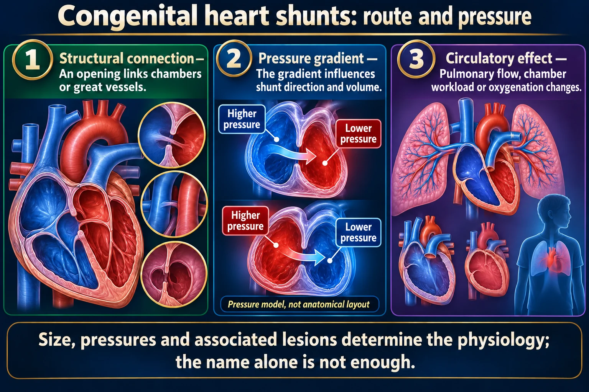
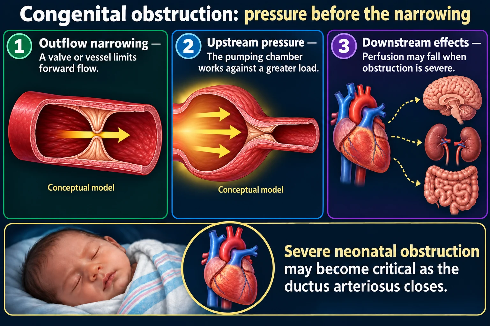
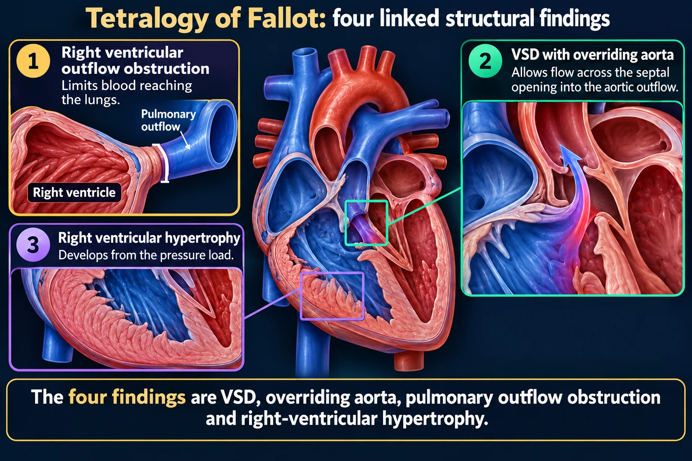
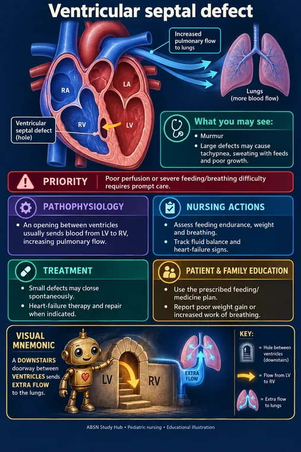

💝 Congenital Heart Defects
Sort them by which way the blood shunts. Left-to-right floods the lungs; right-to-left makes a blue baby.
⚖️ The one sorting rule

Size, pressures and associated lesions determine the physiology; the name alone is not enough.
Read the picture
Structural connection
An opening links chambers or great vessels.
Pressure gradient
The gradient influences shunt direction and volume.
Circulatory effect
Pulmonary flow, chamber workload or oxygenation changes.
ASD and VSD
Openings in atrial or ventricular septa can create left-to-right flow after birth.
PDA
Persistent connection between aorta and pulmonary artery changes flow after birth.
AV septal defect
Septal and atrioventricular valve anatomy are affected.

Severe neonatal obstruction may become critical as the ductus arteriosus closes.
Read the picture
Outflow narrowing
A valve or vessel limits forward flow.
Upstream pressure
The pumping chamber works against a greater load.
Downstream effects
Perfusion may fall when obstruction is severe.
Aortic stenosis
Obstruction at the aortic valve increases left-ventricular workload.
Pulmonary stenosis
Obstruction at the pulmonary valve increases right-ventricular workload.
Coarctation
Aortic narrowing can cause upper/lower limb pressure or pulse differences.

There is only one sorting rule and it is a picture: which way the blood goes through the hole.
The four findings are VSD, overriding aorta, pulmonary outflow obstruction and right-ventricular hypertrophy.
Read the picture
Right ventricular outflow obstruction
Limits blood reaching the lungs.
VSD with overriding aorta
Allows flow across the septal opening into the aortic outflow.
Right ventricular hypertrophy
Develops from the pressure load.
Physiology
The severity of outflow obstruction strongly influences cyanosis.
Hypercyanotic episode
Increased right-to-left flow can cause sudden worsening cyanosis and distress.
Response
Calm and position the child as instructed and activate the urgent congenital-heart care plan.
Which way does the blood shunt? Left-to-right = too much lung blood = heart failure. Right-to-left = deoxygenated blood to the body = cyanosis.
| Group | Blood goes | Result | Examples |
|---|---|---|---|
| Acyanotic | Left → right | Pulmonary overload, heart failure, poor feeding, sweating, poor growth | ASD, VSD, PDA, coarctation, aortic stenosis |
| Cyanotic | Right → left | Cyanosis, clubbing, polycythemia | Tetralogy of Fallot, transposition, truncus arteriosus |
🧠 Why left-to-right causes heart failure, not cyanosis
The left side is at higher pressure, so blood pushes across into the right side and goes back through the lungs again. Oxygenation is fine — but the lungs and right heart are overloaded.
That is why an acyanotic baby is pink but exhausted: sweaty with feeds, breathless, and not gaining weight.
💝 The defects worth knowing
| Defect | What it is | Signature |
|---|---|---|
| VSD | Hole between the ventricles | Commonest; loud harsh murmur; many close alone |
| ASD | Hole between the atria | Often quiet for years |
| PDA | Fetal duct fails to close | Machine-like continuous murmur; common in preterm; indomethacin closes it |
| Coarctation | Narrowed aorta | BP higher in arms than legs; weak or absent femoral pulses |
| Tetralogy of Fallot | Four defects together | Tet spells — sudden deep cyanosis |
| Transposition | Great vessels swapped | Cyanosis at birth; needs prostaglandin to keep the duct open |
 🧒 Tetralogy of FallotPicture, memory hook and nursing care →
🧒 Tetralogy of FallotPicture, memory hook and nursing care → 🧒 Coarctation of the aortaPicture, memory hook and nursing care →
🧒 Coarctation of the aortaPicture, memory hook and nursing care → 🧒 Atrial septal defectPicture, memory hook and nursing care →
🧒 Atrial septal defectPicture, memory hook and nursing care →
🧒 Ventricular septal defectPicture, memory hook and nursing care → 🧒 Patent ductus arteriosusPicture, memory hook and nursing care →
🧒 Patent ductus arteriosusPicture, memory hook and nursing care →⭐ Tetralogy of Fallot — PROV
- Pulmonary stenosis
- Right ventricular hypertrophy
- Overriding aorta
- VSD
🚨 The tet spell
Sudden deep cyanosis during crying, feeding or straining — the child becomes irritable, then limp.
Put the infant in the KNEE-CHEST position immediately. Older children squat instinctively - do not stop them.
Why it works: flexing the knees onto the chest raises systemic vascular resistance, which pushes blood back through the pulmonary circulation instead of straight across the VSD.
Then: calm the child, oxygen, morphine if ordered, IV fluids.
🩸 Coarctation — check all four limbs
Blood pressure higher in the arms than the legs, with weak or absent femoral pulses, is coarctation until proven otherwise.
Always compare upper and lower limb pulses and pressures in a child with a murmur.
🩺 Nursing care
✅ Heart failure in an infant looks like feeding trouble
- Sweating with feeds; tires after a few minutes
- Poor weight gain — often the earliest sign
- Tachypnea and tachycardia at rest
- Hepatomegaly — the pediatric equivalent of peripheral edema
- Periorbital edema rather than ankle swelling
Care: small frequent feeds, higher-calorie formula, feed for no more than about 30 minutes to avoid exhausting them, cluster care to allow rest, upright positioning.

🚨 Digoxin in children
- Count the apical pulse for a full minute before every dose
- Hold and report if <90–110 in an infant, <70 in a child
- Early toxicity in a child is usually vomiting and bradycardia, not visual changes
- Watch potassium — low K⁺ increases digoxin toxicity
Never repeat a dose that was vomited, and never mix digoxin into a bottle of formula - if the feed is not finished, the dose is unknown.
🦠 Kawasaki disease
Fever for 5 or more days plus red eyes, strawberry tongue, cracked lips, rash, and swollen red hands and feet that later peel.
It causes coronary artery aneurysms, so treatment is IVIG plus aspirin — the one situation where a child is given aspirin.

🎯 NCLEX traps
- Left-to-right = heart failure. Right-to-left = cyanosis
- Tet spell → knee-chest
- Arms higher than legs = coarctation
- Apical pulse one full minute before digoxin
- Kawasaki is the exception where aspirin is given
- Sweating with feeds and poor weight gain = infant heart failure